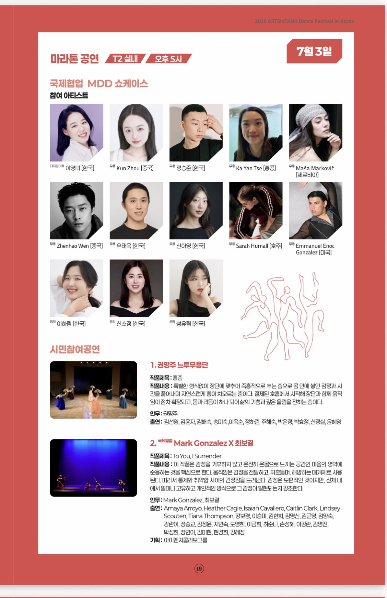

Oil Tank Culture Park · Seoul
ARTSinTANK Dance Festival in Korea
International MDD CollaborationI participated as a dancer in the ninth ARTSinTANK Dance Festival in Korea, joining its international MDD collaboration residency and showcase. The collaboration brought artists from six countries and regions into a shared performance process at Seoul’s Oil Tank Culture Park, presented on 3 July 2026.

Residency
Residency and performance process · Oil Tank Culture Park
The ninth ARTSinTANK Dance Festival in Korea ran from 28 June to 3 July 2026 at Oil Tank Culture Park in Seoul. Its MDD programme brought artists together for an international residency and collaborative showcase.
I participated as a dancer in the residency and performed in the concluding showcase on 3 July at 5:00 p.m. in Tank 2. The official programme lists participating artists from Korea, China, Hong Kong, Serbia, Australia and the United States; it does not give the collaborative work a separate title.
Showcase
3 July 2026, 5:00 p.m. · Tank 2, Oil Tank Culture Park
The international MDD showcase concluded the festival’s residency process. The organizer’s official video documents the collaborative performance and is embedded here from the original ARTSinTANK YouTube channel.
Performance
International collaboration · July 2026


- Performer
- Zhenhao Wen
- Programme
- International MDD Collaboration Showcase
- Festival
- Ninth ARTSinTANK Dance Festival in Korea
- Performance
- 3 July 2026, 5:00 p.m., Tank 2, Oil Tank Culture Park, Seoul
Photographs provided by Zhenhao Wen; photographer not identified.
Film
A separate organizer programme · 23 September 2026
Separately from the July live showcase, an ARTSinTANK relay dance-film programme presented To Leave a Trace. The organizer’s page lists the film under my name, identifies me as invited from China and notes recommendation by the University of Hawaiʻi.
Context
Festival documentation and official records


The festival programme and ticket listing name Zhenhao Wen among the participating artists in the international MDD showcase.
Seoul Metropolitan Government festival listing
Festival dates, Oil Tank Culture Park venue and the MDD international collaboration.
Public performance listing on Playticket
Names Zhenhao Wen among the participating MDD artists and gives the 3 July performance time and Tank 2 venue.
ARTSinTANK official festival programme
Organizer record for the international MDD showcase.